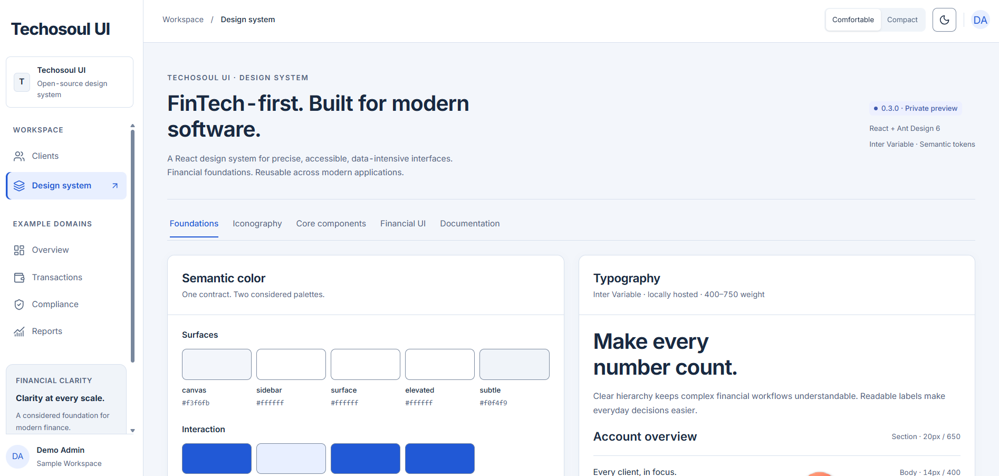
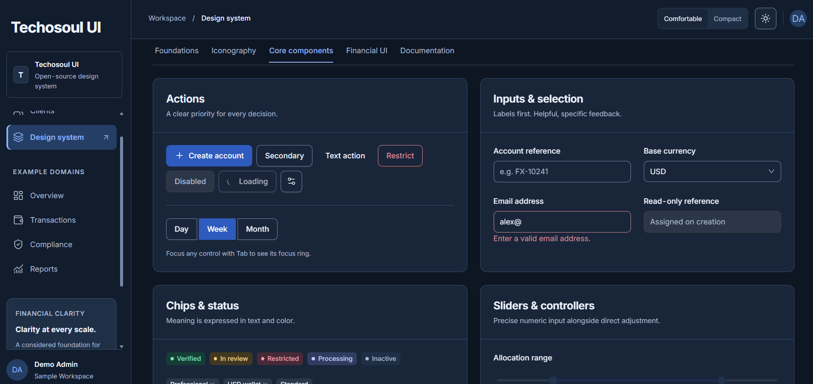
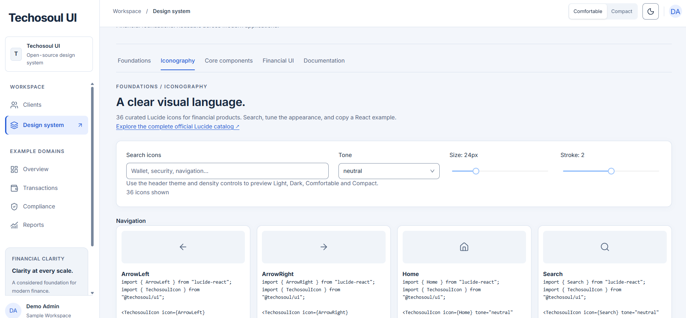
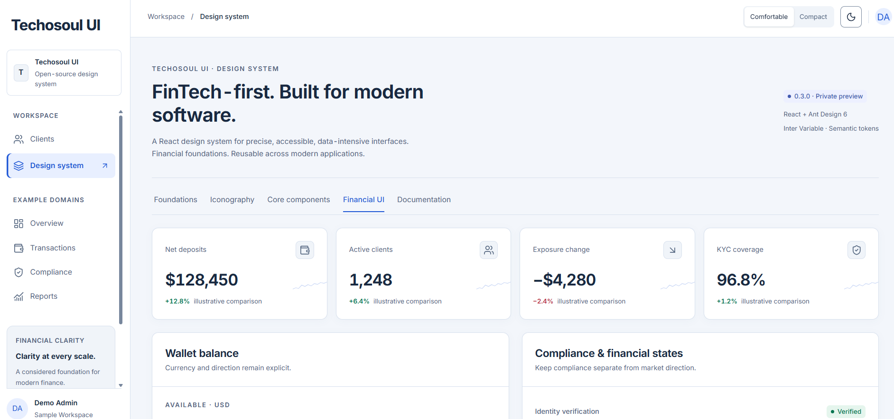

Enterprise / Design System
Techosoul UI
An open-source React and TypeScript design system for modern software products, financial interfaces, and data-intensive applications. Published on npm as @techosoul/ui.
- Problem
- Consistent, accessible and maintainable interfaces across complex software products.
- My role
- Product definition, requirements, prioritization and coordination through public release.
- Outcome / value
- A public component showcase and version 0.3.0 published on npm as @techosoul/ui.

Techosoul UI foundations: semantic colors, typography, Light theme and density controls.
Product Overview
Techosoul UI is a reusable design system developed with React, TypeScript, and Ant Design 6. It combines semantic design tokens, consistent typography and spacing, Light/Dark themes, Comfortable/Compact density modes, curated Lucide iconography, core UI components, and financial interface patterns.
The project addresses the need for consistent, accessible, and maintainable interfaces across complex software products.
My Contribution
- Led product definition, scope and component prioritization.
- Defined design-system requirements and visual consistency principles.
- Coordinated product design, engineering implementation, testing, documentation and release activities.
- Delivered a public component showcase and published version 0.3.0 on npm.
Design-System Capabilities
- Semantic design tokens with consistent typography and spacing.
- Light/Dark themes and Comfortable/Compact density modes.
- Curated Lucide iconography and reusable core UI components.
- Financial interface patterns for data-intensive software products.
Technology: React, TypeScript, Ant Design 6, Inter Variable, Lucide Icons.
Public Release & Project Links
Published on npm as @techosoul/ui, version 0.3.0, with a public component showcase.
Product Screens
Original showcase screenshots. The historical “Private preview” label remains visible in the foundations capture.



View full image ↗

View full image ↗

View full image ↗